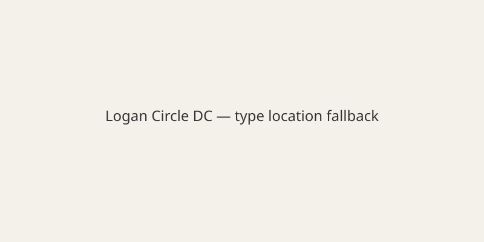

Washington DC · Crime · 12 November 2026
Building manager killed in Logan Circle gym shooting; suspect dies by suicide after balcony fire
ObjectiveNews. Target T 100 · N 0 · C 100.

Metropolitan Police Department interim Chief Jeffrey Carroll stated that on the morning of 12 November Matt Lambert, 55, entered Vida Fitness on the ground floor of a condominium building in the Logan Circle neighborhood and shot and killed James Stuart, 46, the building’s property manager. Lambert then went to his seventh-floor unit, barricaded himself, and fired a rifle from the balcony, wounding four additional people. After speaking with negotiators for approximately an hour he died from a self-inflicted gunshot. Police recovered a handgun, rifle and shotgun, along with containers of gasoline. Investigators linked the incident to an ongoing lawsuit filed by Lambert alleging mold and water damage caused by building work and laundry dryers. One of the wounded remained in critical condition. These details are from police briefings and court-record references in reporting. Full forensic timelines and any additional evidence are not yet public.

Source articles and scores
| Outlet | Headline | T | N | C |
|---|---|---|---|---|
| CBS News | 1 killed, 5 injured in shooting in Washington, D.C.'s Logan Circle neighborhood; suspect is dead | 96 | 0 | 98 |
| City Cast DC | Two Dead, Including Suspect, in Shooting at Logan Circle's VIDA Fitness | 95 | 0 | 95 |
Image credit: type location; local SVG fallback committed.